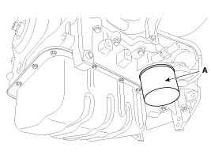
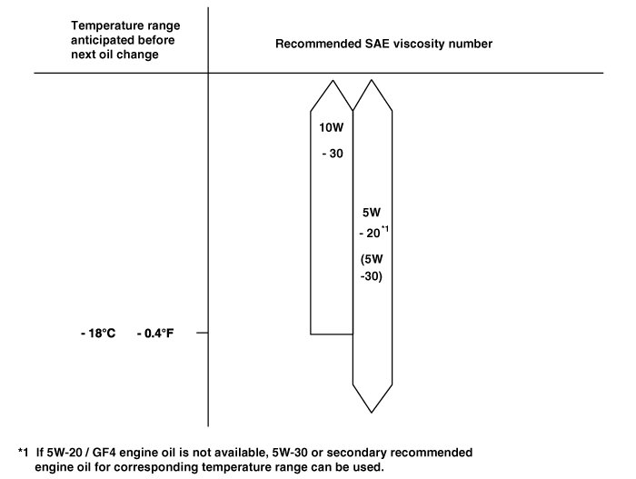

Engine Oil: Service and Repair
Oil And Filter Replacement
CAUTION:
- Prolonged and repeated contact with mineral oil will result in the removal of natural fats from the skin, leading to dryness, irritation and dermatitis. In addition, used engine oil contains potentially harmful contaminants which may cause skin cancer.
- Exercise caution in order to minimize the length and frequency of contact of your skin to used oil. Wear protective clothing and gloves. Wash your skin thoroughly with soap and water, or use water-less hand cleaner, to remove any used engine oil. Do not use gasoline, thinners, or solvents.
- In order to preserve the environment, used oil and used oil filter must be disposed of only at designated disposal sites.
1. Park the car on level ground.
2. Drain engine oil.
(1) Remove the oil filler cap.
(2) After lifting the car, remove the oil drain plug and drain oil into a container.
3. Replace the oil filter (A).
(1) Remove the oil filter.
(2) Check and clean the oil filter installation surface.
(3) Check the part number of the new oil filter is as same as old one.
(4) Apply clean engine oil to the gasket of a new oil filter.
(5) Lightly screw the oil filter into place, and tighten it until the gasket contacts the seat.
(6) Tighten it with the torque below.
Tightening torque :
11.8 - 15.7 N.m (1.2 - 1.6 kgf.m, 8.7 - 11.6 lb-ft)

4. Install the oil drain plug with a new gasket.
Tightening torque :
34.3 - 44.1 N.m (3.5 - 4.5 kgf.m, 25.3 - 32.5 lb-ft)
5. Fill with new engine oil, after removing the engine oil level gauge.
Capacity
Total:
4.5 L (1.19 U.S.gal., 4.76 U.S.qt., 3.96 lmp.qt.)
Oil pan: 3.7 L (0.98 U.S.gal., 3.91 U.S.qt., 3.26 lmp.qt.)
Drain and refill including oil filter:
4.0 L (1.06 U.S.gal., 4.23 U.S.qt., 3.52 lmp.qt.)
6. Install the oil filler cap.
7. Start engine and check for oil leaks and check the oil gauge or light for an indication of oil pressure.
8. Recheck the engine oil level.
Inspection
1. Check the engine oil quality.
Check the oil deterioration, entry of water, discoloring of thinning. If the quality is visibly poor, replace the oil.
2. Check the engine oil level.
After engine warm up stop the engine wait 5 minutes then check the oil level. Oil level should be between the "L" and "F" marks on the dipstick. If low check for leakage and add oil up to the "F" mark.
NOTE:
Do not fill with engine oil above the "F" mark.
Selection Of Engine Oil
Recommendation: 5W-20/GF4&SM (If not available, refer to the recommended API or ILSAC classification.)
API classification: SL, SM or above
ILSAC classification: GF4 or above
SAE viscosity grade: Refer to the recommended SAE viscosity number

NOTE:
For best performance and maximum protection of all types of operation, select only those lubricants which:
1. Satisfy the requirement of the API or ILSAC classification.
2. Have proper SAE grade number for expected ambient temperature range.
3. Lubricants that do not have both an SAE grade number and API or ILSAC service classification on the container should not be used.